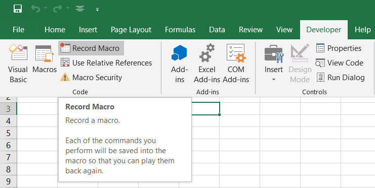
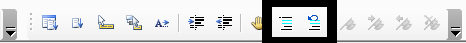

The Macro Recorder records user actions in VBA code, and is a valuable tool for identifying commands and syntax. Its button is found under the Developer tab (or under View > Macros), and is pressed once to start recording, and then again when ready to stop.
A constraint of the macro recorder is that, although it does a good job of assuming your intentions, it does not exactly know what you are thinking; and for complex tasks it will often be insufficient on it's own.

Exercise: Record a macro performing any action upon a cell or group of cells. Then stop recording, and press alt + F11 to view the code.
The first line of a recorded macro will always be "Sub", followed by a name for the macro. The last line will always be "End Sub". These two commands declare the start and end of your macro, which in this instance is called a subroutine.

Subroutines are simply automated processes, but ones which can also be called upon by higher-level procedures.
Functions are also automated processes; both subs and functions can automate a process, but the special property of functions is that they can also return a value, such as a calculation. Worksheet formulas are examples of functions.
Both functions and subs can be provided input-arguments when called upon, such as the below "InputNum" of 4.

Above, the 'CallFunction' macro runs the 'DoubleInput' function, and uses it to display the number 8 (4 x 2) in a message box.
Subs, functions, and variables (which are discussed in a later chapter) have the following naming restrictions:
Due to the inability to include spaces, using underscores instead of spaces is a common practice for stringing together words. Also commonly used is CamelText, where the first letter of each word in the string is capitalized, such as mCopyPaste.
Operators are the symbols indicating mathematical relationships between values; in VBA, they are essentially identical to the ones in the regular worksheet interface.
| Symbol | Meaning |
|---|---|
| + | Addition |
| - | Subtraction |
| * | Multiplication |
| / | Division |
| mod | Modulus (Remainder) |
| = | Equal To |
| <> | Unequal To |
| < | Less Than |
| > | Greater Than |
| =< | Less or Equal To |
| => | Greater or Equal To |
One of the reasons VBA is so popular, and powerful, is ease of use. For example, in identifying errors while typing, providing dropdown-lists of relevant commands relevant to the object in question (objects are the subject of a later chapter).
It uses text color-coding - blue for reserved keywords, black for normal text, red for recognized errors, and green for comments.

Programming languages provide ways to leave notes within the code, by ignoring text which follows a certain character. It is a best practice for readability, communication with other developers, and for removing lines of code from a procedure while retaining the text.
In Excel, the apostrophe tells code execution to ignore a particular line. To comment multiple lines, an apostrophe must be present at the beginning of each; however, the 'Edit' toolbar, contains buttons for commenting or un-commenting multiple lines at a time, and is toggled by View > Toolbars > Edit.

Excel reads values within quotation marks as text, rather than code. But what if the text is intended to display quotation marks? This is very common when entering formulas, for example.
To insert quotation marks into a string of text, in the VBA environment, use two quotation marks in a row, and this will tell the application to display one instance in the text.
Msgbox "The bird says ""Tweet"""

When you record or create a macro, it will be available in the window opened by clicking 'Macros' under the Developer tab, or View tab. At the bottom of this window is a dropdown-list to select workbook, if there are multiple workbooks open. With a macro selected, the actions available include run, edit, delete.

With a macro selected, you may click on 'Options', and assign a hotkey, and/or description. Hotkeys are in the format ctrl + __. Avoid overriding any Windows hotkeys for functions you depend on, such as ctrl+c to copy.
Insert a shape, or icon, and you can assign a macro to it as a button, by right-clicking on the object, selecting 'Assign Macro', and then selecting the macro of your choice.
You may also insert a 'command button', the first object under the Form Controls menu, brought up by clicking 'Insert', under the Developer tab. By default, command buttons will prompt you to assign a macro.
The same window from which the Developer tab was created can be used to assign macros to the ribbon, or quick-access toolbar.
After adding to the quick-access toolbar, you may click 'Modify' to customize the icon. To add to the ribbon, you must click 'New Group', and then create a new custom group.
Within the VBA code of one sub or function, another sub or function may be called upon, using the 'Call' command, followed by a macro name. Code execution will return to the line following that statement, once the called-upon procedure has been completed.
The "Call" command is actually optional, typing only the name of the called-upon macro will have the same effect. Another alternative is Application.Run, followed by a space and the name of a macro. This is particularly helpful when calling macros in other workbooks.
Finally, though not technically a different way of running macros, there is a 'Personal Macro Workbook' which allows you to store them in the Excel application, via a hidden workbook only available in the VB Editor. The value in this is that the contents may be called upon at any time, regardless of which workbooks are open.
A Google search of how to set it up will produce reliable results, such as www.launchexcel.com/excel-personal-macro-workbook/